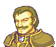

第4章Collapse of the Alliance
Scenes (18)
ワールドマップ上
(背景 エレブ大陸地図)
ヘクトルの遺言をうけFollowing Hector's dying wish,
ロイたちは リリーナが留守をあずかる
オスティア領を目指し 西へと進み始めたRoy and his companions began advancing west, heading for the Ostia domain that Lilina was watching over in their absence.
途中 リキア諸侯の一人 エリックの
治める地ラウス領へとさしかかるAlong the way, they approached the Laus territory, governed by one of the Lycian lords, Erik.
一面の草原に 豊かな水をたたえる川・・・
この のどかなラウスの地でA land of plains blanketed everywhere, with a river carrying abundant water... In this peaceful land of Laus,
暗い陰謀が 着実に進行しつつあることを
ロイたちは目の当たりにすることとなるRoy and his companions would come face to face with a dark conspiracy steadily advancing.
Opening
(エリックの元にナーシェンが訪れる)
(背景 城内)

これはこれは
ナーシェン閣下Well, well, well — Lord Narcian.

エリック卿か
ベルンへの帰順 なによりLord Erik. Your submission to Bern is most welcome.
古い盟約などに とらわれていては
われらの未来は ありませんからなIf we remain bound by old pacts, there will be no future for us.
われらの未来は
ベルン王国と共に・・・Our future lies together with the Kingdom of Bern...
それは良い心がけだ
クックックッ・・・That's a fine attitude to have. Kuh-huh-huh...
それはそうと 例の土産はどこに？
ここにはいないようだがBy the way, where's that little gift of yours? She doesn't seem to be here.
おお もちろん！
別室に用意してありますともOh, of course! She's already been prepared in another room.
フフフ・・・ 世間知らずな娘でしてなHeh heh heh... She's quite the naive, sheltered girl.
軍務中の兄に会わせてやろうといえば
カンタンにわれらの手に落ちましたI told her I'd let her see her brother, who's away on military duty, and she fell right into our hands, easy as that.
おい 連れてこい！Hey, bring her in!

ここは？
お兄さまは クレイン兄さまはどこ？Where is this? Big brother... where's big brother Klein?
ようこそ クラリーネどのWelcome, Lady Clarine.
あなた どなた？Who... who are you?
私はナーシェン
ベルン三竜将の一人だI am Narcian, one of Bern's Three Dragon Generals.
私が お兄さまのかわりに
たっぷりと可愛がってあげるよIn your brother's place, I'll dote on you plenty myself.
クックックッKuh-huh-huh...
・・・クスッ...Hmph.
？ なにがおかしいのだ？
クラリーネどの? What's so funny, Lady Clarine?
お兄さまのかわり？ あなたが？
ご自分のおすがた 鏡でごらんなさいなIn my brother's place? You? Why don't you take a good look at yourself in a mirror.
その服 その髪型 その言葉づかいThat outfit, that hairstyle, that way of speaking —
なにからなにまで
すべてが「下品」じゃありませんのEverything about you, from head to toe, is nothing but "vulgar," isn't it?
げ げ 下品！
私が 下品？V-v-vulgar!? Me? Vulgar?
あなたなんか お兄さまと比べれば
お月さまとスッポンですわよ！Compared to my brother, you're like the moon next to a turtle!
おのれっ 許さん 許さんっ！Damn you... I won't forgive this, I won't forgive this!!
この小娘 こ この私が
よりによって「下品」などとっ！！This little brat — of all things — calling me "vulgar"!!

ナーシェン様 アラフェン城が
敵に奪い返されたとの報が！Lord Narcian, word has come that Castle Araphen has been retaken by the enemy!
なにっ！ スレーターは？What!? What about Slater?
は・・・行方が知れませんSir... his whereabouts are unknown.
敵はリキア同盟の残党
首領はフェレ家の嫡男ロイとの報告が・・・The enemy are remnants of the Lycian Alliance, and reports say their leader is Roy, the eldest son of House Pherae...
・・・・・・......
ちっ！ エリック卿
この小娘を 牢に放りこんでおけTch! Lord Erik — throw this brat into the dungeon.
私が帰ったら
たっぷり いたぶってやる！When I get back, I'll have my fill of tormenting her!
それから オスティアへの街道を閉じろ
そやつらが 通りかかるかもしれんからなAnd close off the road to Ostia — those fools might pass through it.
ははっ！Yes, sir!!
(ナーシェンが城を後にする)
敵軍2ターン目
(背景 地下牢)
こんなところに
閉じこめられるなんて・・・To think I'd be locked up in a place like this...
・・・おい...Hey.
だれっ！Who's there!?

この城の傭兵だ
出ろ エリック卿が用があるそうだI'm a mercenary of this castle. Come out — Lord Erik has business with you.
いやです！
どうして あんな下品な男たちと・・・I don't want to! Why would I go with vulgar men like you...
・・・いいから
出てこい！...Enough talk. Come out!
ちょっと はなしなさい
無礼者っ！ 私を誰だと・・・Wait, let go of me! How rude! Do you know who I am...
・・・・・・......
はなしなさいってば！I said let go of me!
敵軍3ターン目
(背景 城内)
はなしなさい！
はなしてって・・・Let go of me! I said let go...
しずかにしろ
逃げられなくなるぞBe quiet. You'll end up unable to escape.
！
あなた・・・! You...
この先の木かげに
馬を一頭 つないであるThere's a horse tied up by the trees just ahead.
それに乗って
早く逃げろRide it and get away, quickly.
・・・どうして？
どうして助けてくれるのです？...Why? Why are you helping me?
ベルンには
うらみがあるI have a grudge against Bern.
うらみ？A grudge?
おまえには
関係のないことだThat's none of your concern.
そんな言い方をされたら
気になりますわBeing spoken to like that only makes me more curious.
時が移る
早く行け！Time's running out. Go, quickly!
・・・・・・......
(クラリーネが城から逃げ出す)
(フォーカス クラリーネ)
ここは・・・
戦場の真ん中ではありませんの！？This is... the middle of a battlefield, isn't it!?
・・・あの剣士
気がききませんわ！！...That swordsman! How inconsiderate of him!!
レディは館まで送りとどけるのが
殿方の「たしなみ」ってものですわよ！Seeing a lady safely home is supposed to be a gentleman's "proper manner"!
ふう・・・でも 西方にいらっしゃる
お兄さまにお会いしようとWhew... and all because I wanted to see my brother, who's off in the west...
自分で館を抜け出したというのに・・・
散々ですわI snuck out of the mansion myself, and look how miserable this turned out...
どうすれば 良いのかしら・・・Whatever should I do...
敵軍4ターン目
(海賊が砦から出現)

へへへ・・・Heheheh...
やれリキアだ やれベルンだと
えらい方々は大変なこった"It's Lycia, it's Bern" — must be rough being someone important.
だが こっちは その分
かせぎ時ってもんだがなBut for us, that just means it's all the more a good time to make some money.
敵軍5ターン目
(背景 城内)
おお 来たか！
待っておったぞOh, you've come! I've been waiting for you.
・・・用は？...What do you need?
外のわが軍が苦戦しておる
何人かを連れて助けに行ってくれOur forces outside are struggling. Take a few men and go help them.
・・・・・・......
聞こえぬのか！
すぐに助けに・・・Can't you hear me!? Go help them at once...
聞こえている
用意ができしだい行くI heard you. I'll go once I'm ready.
ちっ あいそのないヤツだ
まあ うではたつようだがTch, what an unfriendly fellow... Well, he does seem skilled with a blade, at least.
敵軍6ターン目
(ルトガーが城から出てくる)
・・・・・・......
会話(クラリーネ(NPC)→ロイ)
(背景 平原)
ちょっと
そこのあなた！Hey, excuse me — you there!

えっ ぼく？Huh? Me?
ほかに誰がいますの？
あなたが この軍のリーダーですわね？Who else would I be talking to? You're the leader of this army, aren't you?
そうだけどYeah, that's right.
ちょうどいいですわ
あなた 私を護衛しなさいHow convenient. You — escort me.
え？Huh?
聞こえませんでしたの？
私を護衛しなさいと言ったのですDidn't you hear me? I said escort me.

なんじゃ なんじゃ
だまって聞いていれば この小娘が！！What, what is this — listening quietly while this little brat...!!
あなたには 話していませんわ
下がっていなさいなI wasn't talking to you. Stay out of this.
な なんじゃとっ！？Wh-what did you say!?
まあまあ マリナスNow, now, Marinus.
彼女は 城の者に追われているみたいだったよ
だからぼくらに 守ってほしいのだろう？It looked like she was being chased by the castle's men, so she probably wants us to protect her, right?
ま まあ そういうこと
ですわねW-well, that's... about the gist of it, yes.
なっ！？ なんという
あつかましい態度じゃ！！What!? What nerve, what shameless cheek!!
役にも立たん小娘をおいておくほど
わが軍は甘くないぞい！Our army isn't soft enough to go keeping some useless little brat around!
私はクラリーネ！
「小娘」なんて呼ばないでくださらない？I'm Clarine! Would you kindly stop calling me "little brat"?
それに 役に立たないとは
ごあいさつですわ！And "useless," you say — how rude of you!
杖が使えますから
ケガをした方を助けるくらいは・・・I can use a staff, so at the very least I could help an injured person...
いっしょに
戦ってくれるということかな？So you mean you'll fight alongside us?
・・・も もちろんですわ...O-of course I will.
わ 私が ただ何もせずに守ってくれなんて
言うはずが・・・I-I'm not the type to just be protected for nothing...
それは 助かるよ！That's a relief!
あのベルンが相手なんだ
戦力は 多ければ多いほど助かるんだAgainst an enemy like Bern, the more fighting power we have, the better.
ぼくはロイ
よろしくね クラリーネI'm Roy. Nice to meet you, Clarine.
こちらこ・・・Likewise, I...
フ フン！ なれあいはしませんわH-hmph! Don't think we're friends now.
会話(クラリーネ(自軍)→ルトガー(敵軍))
あっ！
あなたは・・・Ah! You're...
なんだ
まだいたのかWhat, you're still here?
「まだ」ですって！"Still," you say!
戦場の真ん中に放りだしておいて
よくそんなことが言えますわね！You dumped me in the middle of a battlefield, and you can say something like that!?
ひとつ まちがえれば
ひどい目にあったのですわよIf even one thing had gone wrong, I could have ended up in terrible trouble, you know!
ひどい目にあわなくて幸運だったな
用はそれだけか？Lucky for you nothing did. Is that all you wanted to say?
待ちなさい！ 私を ほうっておいて
このまま立ち去るおつもり？Wait a moment! You abandon me and just walk off like that, is that your plan?
殿方なら殿方らしく
ちゃんと「責任」をとるべきですわIf you're going to act like a gentleman, you should properly take "responsibility" for it.
「責任」？
なんだそれは？"Responsibility"? What's that supposed to mean?
助けたレディを守って館まで送るのが
殿方の「たしなみ」 つまり義務ですわ！Protecting a lady you've rescued and seeing her home is a gentleman's "proper manner" — in other words, his duty!
途中で放りだしてしまうような物語
どの吟遊詩人からも聞いたことありませんものI've never once heard of a story where the hero abandons the lady partway through, from any bard.
・・・いったい
なんの話をしているんだ？...What in the world are you even talking about?
だいたい あなた ベルンに
うらみがあったのではありませんの？In any case, didn't you have a grudge against Bern?
それなのに ベルンに敵対する
私たちに 剣をむけるだなんて・・・And yet you turn your sword on us, who are fighting against Bern...
ちょっとまて！
本当か それは？Wait a moment! Is that true?
えっ
なにがですの？Huh? What do you mean?
この軍は ベルンと敵対しているのか！？Is this army opposing Bern!?
え ええ ロイってリーダーから
そう聞きましたわY-yes, that's what I heard from your leader, Roy.
・・・よし
わかった...Fine. Understood.
え？Eh?
おまえたちと共に戦ってやる
それで文句はないだろうI'll fight alongside you lot. That should settle things, shouldn't it?
え ええ まあ・・・Y-yes, well...
もう！ 大事なのは「ベルンと戦う」ではなく
「私を守る」ということですのに・・・Honestly! What matters isn't "fighting Bern" — it's "protecting me"...
民家(北東)
(背景 民家)
山賊や 海賊は
村を襲うことがあるんだBandits and pirates sometimes attack villages, you know.
襲われた村は壊されて
もう何も残らないA village that's been attacked gets destroyed, and nothing's left anymore.
誰かが村に知らせに行けば
助けてやれるんだが・・・If only someone would go warn the village, they could be saved...
村(北東)
とびらとか 宝箱っていうのはね
とうぞくがいなきゃ開かないんだDoors and treasure chests, you know — they won't open without a thief around.
だって とうぞくのかぎは
とうぞくしか使えないもんね'Cause a thief's key can only be used by a thief, right?
けど このかぎなら なんと！
使えば誰でも とびらが開くんだBut get this — with THIS key, anyone can open any door, no matter what!
名づけて
とびらのかぎ！I call it... the Door Key!
感謝してよ これって
すごく貴重なアイテムなんだからYou should be grateful — this is a seriously precious item, you know.
まあ一応・・・
道具屋でも売ってるけどさWell, I guess... you can also just buy one at the item shop, though.
(「とびらのかぎを手に入れた」)
民家(北東・右)
(背景 民家)
ラウス軍の中にいる 弓もった騎馬兵
あれが遊牧民さThose mounted archers in the Laus army — those are the nomads.
あいつらサカ部族や 北のイリア騎士団は
有能な傭兵だって話だI hear those Sacae tribesfolk, and the Ilia knights up north too, make for capable mercenaries.
今はこんな時代だから
どこの国も 戦力が欲しいんだろうなIn times like these, every country wants all the fighting strength it can get, I suppose.
村(北)
(背景 村)
わしらはみんな
あんたがたの味方じゃぞAll of us here are on your side, you know.
生まれた国を見捨て 敵に寝返るなど
あってはならぬことじゃAbandoning the country you were born in and turning traitor to the enemy — that's something that should never be done.
この宝剣をもっていくがよいTake this treasured sword with you.
これは とても高価な品でな・・・
ああ まださわってはいかんぞThis is a very valuable item, you know... Ah, don't touch it just yet.
見なさい このみごとなかがやき
ためいきがでるじゃろうLook at this splendid shine — it takes your breath away, doesn't it.
これは わしの先々々々代が
王からたまわった ゆいしょある品で・・・This was handed down to my great-great-great-grandfather by the king, a treasure with a proud history...
(「はがねの大剣を手に入れた」)
民家(北東・左)
(背景 民家)
おぬし
戦いの極意を知っておるか？You there — do you know the secret art of combat?
剣は おのに強く
おのは やりに強いThe sword is strong against the axe, and the axe is strong against the lance.
そして やりは 剣に強いAnd then, the lance is strong against the sword.
どうじゃ？
寝る前には必ずこれを三度となえて・・・How about it? Before you sleep, you must chant this three times without fail...
・・・なに？ もう知っておると？
むむ・・・ならばこれはどうじゃ...What? You already knew that? Hmm... then how about this?
中には そのことわりを
逆転させてしまう武器があるらしいぞI hear there are weapons out there that can reverse that very principle.
なんと言ったかの・・・？
たしか なんとかバスターとか・・・Now what was it called...? I think it was something like the "...buster"...
村(南西)
(背景 村)
まさかこんな戦争が起こるとは・・・To think a war like this would actually break out...
この村も ベルンの支配下に
おかれてしまうのでしょうか・・・I wonder if this village too will end up placed under Bern's rule...
どうせベルン兵どもに奪われるのなら・・・
あなたがたに託しましょうIf it's going to be taken by those Bernese soldiers anyway... I'd rather entrust it to you all.
これは 生命のみなもとを高める
魔法の衣This is a magic robe that heightens the very wellspring of life.
これを使えば 多少のきずでは
倒れない体になるはずですIf you wear this, you should become someone who won't fall even from minor wounds.
ただし・・・一度使えば
失われてしまいますHowever... once used, even just once, it will be lost.
きちょうな品ですので
よくよく考えて お使いくださいSince it's such a precious item, please think it over carefully before using it.
(「天使の衣を手に入れた」)
エリック初戦時
かびの生えた盟約にしばられる
おろか者どもYou fools, bound by moldy old pacts.
世の道理を教えてやろう！Let me teach you the way of the world!
エリック撃破時
ふはは・・・おろかなPuhaha... how foolish.
強者に逆らうおまえたちに
どの道 未来などないのだ・・・For those who defy the strong, there is no future either way...
After seizing
(背景 城内)
ロイ様！ ラウス兵の
抵抗がやみましたLord Roy! The Laus soldiers' resistance has stopped.
そうか わかった
少し休息をとろう みんなに伝えてくれI see, understood. Let's take a short rest — go tell everyone.
はっYes, sir.

ロイ様・・・
大丈夫ですか？Lord Roy... are you alright?
・・・エリック卿が まさか
ベルンに寝返ってるなんて・・・...To think Lord Erik would betray us to Bern, of all things...
リキア同盟は 結束の固い
一枚岩だって思っていたのにI thought the Lycian Alliance was united, solid as a single slab of rock, but...
ベルンめ なんて汚いことを！Damn Bern, doing something so filthy!
・・・ごめんなさい...I'm sorry.
あ・・・すみません！
ギネヴィア姫のお気持ちを 考えもせずにAh... I'm sorry! I spoke without even considering Princess Guinivere's feelings.
いいえ・・・当然ですわNo... it's only natural that you would.
ぼくらは これから
西のオスティアへ向かいますFrom here, we're headed west, to Ostia.
でも ヘクトル様が亡くなり
残りの諸侯もあてにならない今But now that Lord Hector has passed away, and the remaining lords can't be relied on either,
和平の望みは・・・残念ながら
絶たれてしまったかもしれませんthe hope for peace... I'm afraid, may have already been severed.
姫は お国に帰られますか？
なにかお手伝いが必要なら・・・Princess, will you be returning to your own country? If there's anything we can help with...
いえ ご迷惑でなければ
ごいっしょさせてくださいNo — if it wouldn't trouble you, please let me come along too.
迷惑なんてことは・・・
でも どうしてですか？It's no trouble at all... but why?
・・・兄はまちがっています...My brother is wrong.
人の争いに竜を復活させ
巻きこむだなんて・・・To revive dragons and drag them into a war among men...
それが 兄のいう世界の「解放」ならば
私はそれを止めたいのですIf that is what my brother calls "liberating" the world, then I want to stop it.
世界の「解放」？"Liberating" the world?
ええ 兄の口ぐせなのです
世界を「解放」しなければいけない・・・Yes — it's my brother's pet phrase. "The world must be 'liberated'"...
今度の戦いも そのためなのだと・・・And this war too, I believe, is for that very purpose...
どういう意味ですか？What does that even mean?
そこまでは 私にも・・・Even I don't know that much...
ですが 兄は 単純に世界の征服などと
考えるような人ではありませんBut my brother isn't the kind of person to simply think in terms of conquering the world.
きっと なにか
よほどの理由があるのですSurely there's some reason behind it, some reason I can't yet see.
でも だからといって 戦争を起こし
罪もない命をうばっていいことには・・・But even so, that doesn't make it right to start a war and take innocent lives...
・・・ギネヴィア姫...Princess Guinivere.